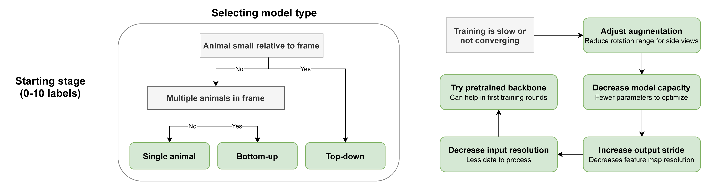
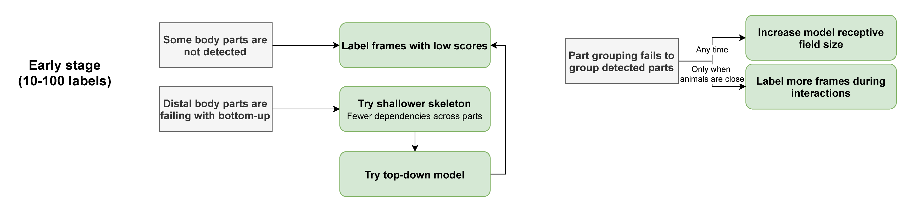
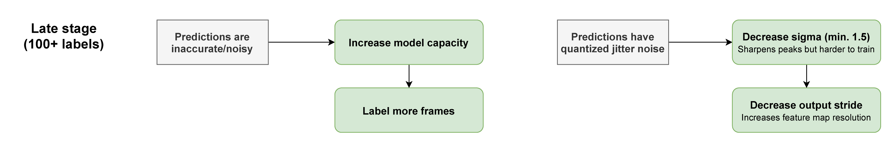

Help¶
Stuck? Can't get SLEAP to run? Crashing? Try the tips below.
First step: Run sleap doctor to check your installation.
Installation¶
I can't get SLEAP to install!
Have you tried all of the steps in the installation instructions?
If so, please start a discussion or open an issue and tell us:
- How you're trying to install it
- What error messages you're getting
- Which operating system you're on
- Output of
sleap doctor(if available)
Can I install it on a computer without a GPU?
Yes! Install SLEAP normally using uv and the GPU support will be ignored. Use --torch-backend cpu to explicitly install CPU-only:
What if I already have CUDA set up on my system?
SLEAP 1.5+ uses PyTorch, which bundles its own CUDA libraries. Your system CUDA installation is not used. The --torch-backend auto flag will detect your GPU and install the appropriate PyTorch version.
Display / GUI Issues¶
SLEAP crashes on Linux with ImportError: undefined symbol: _ZN14QObjectPrivateC2Ei, version Qt_6_PRIVATE_API
This error occurs when the system has Qt 6 libraries (e.g., Debian 12 ships Qt 6.4) that conflict with the Qt libraries bundled inside PySide6. The dynamic linker loads the system's older libQt6DBus.so.6 or libQt6Core.so.6 instead of PySide6's bundled version, causing a symbol version mismatch.
Common error messages:
ImportError: /usr/lib/x86_64-linux-gnu/libQt6DBus.so.6: undefined symbol: _ZN14QObjectPrivateC2Ei, version Qt_6_PRIVATE_API
This is fixed automatically in SLEAP v1.6.1+. On Linux, SLEAP now ensures PySide6's bundled Qt libraries and plugins are loaded before any system or conda-provided Qt libraries.
If you're on an older version, you can work around it by prepending PySide6's Qt library path when launching SLEAP:
PYSIDE_QT=$("$(uv tool dir)/sleap/bin/python" -c "import os,PySide6;print(os.path.join(os.path.dirname(PySide6.__file__),'Qt'))") && \
LD_LIBRARY_PATH="$PYSIDE_QT/lib${LD_LIBRARY_PATH:+:$LD_LIBRARY_PATH}" \
QT_PLUGIN_PATH="$PYSIDE_QT/plugins" \
sleap
If you suspect the automatic fix is causing issues on your system (e.g., a native Linux desktop that was working before), you can disable it:
SLEAP crashes with Could not load the Qt platform plugin "xcb"
This typically has two causes:
1. Missing libxcb-cursor0 (required since Qt 6.5):
2. OpenCV's Qt plugins conflicting with PySide6's. The error may mention a path like .../cv2/qt/plugins. This happens because opencv-python bundles its own Qt and its plugin path takes priority over PySide6's.
SLEAP v1.6.1+ handles this automatically by setting QT_PLUGIN_PATH to PySide6's plugins on Linux. If you're on an older version, use the workaround in the entry above.
SLEAP GUI doesn't work over SSH / X11 forwarding
When connecting to a remote Linux machine via SSH with X forwarding (ssh -X or ssh -Y), make sure:
- X forwarding is enabled on both client and server (
X11Forwarding yesin/etc/ssh/sshd_config) DISPLAYis set — runecho $DISPLAY(should show something likelocalhost:10.0)libxcb-cursor0is installed on the remote machine (sudo apt install libxcb-cursor0)- Conda base is deactivated if active — conda can inject conflicting Qt libraries:
If you still see Qt library errors, see the entries above. Running sleap doctor will report your environment details for further debugging.
Videos fail to load with Could not open codec h264 or Failed initializing scaling graph
This can happen on Linux when OpenCV's video decoder picks up incompatible ffmpeg libraries. Common error messages:
[ERROR:0@70.376] global cap_ffmpeg_impl.hpp:1448 open Could not open codec h264, error: -11
[ERROR:0@70.376] global cap_ffmpeg_impl.hpp:1456 open VIDEOIO/FFMPEG: Failed to initialize VideoCapture
Often preceded by many lines of:
[swscaler @ ...] Failed initializing scaling graph (Resource temporarily unavailable):
fmt:yuv420p csp:unknown prim:unknown trc:unknown -> fmt:bgr24 ...
And ultimately:
Fix: Switch the video backend from OpenCV to imageio-ffmpeg:
This persists to your preferences — all future launches will use the FFMPEG backend automatically. You can also use pyav as an alternative. To switch back:
Usage¶
How do I use SLEAP?
If you're new to pose tracking in general, check out this talk or our review in Nature Neuroscience.
If you're just new to SLEAP, start with the high-level overview and then follow the tutorial.
Once you get the hang of it, check out the guides for more detailed info.
Does my data need to be in a particular format?
SLEAP supports many formats, including all common video formats and imported data from DeepLabCut and others.
However, some video acquisition software saves videos in formats not suitable for computer vision processing. A common issue is that videos are not reliably seekable—you may not get the same data when reading a particular frame index. This is because many video formats reconstruct images using data from adjacent frames.
If you think you may be affected, re-encode your videos:
Options explained:
-c:v libx264: H264 compression-pix_fmt yuv420p: Compatibility with all players-preset superfast: Enables reliable seeking-crf 23: Quality level (15 = nearly lossless, 30 = highly compressed)
If you don't have ffmpeg, install it from ffmpeg.org or via your package manager.
I get strange results where poses appear correct but shifted relative to the image
This is most likely a video compression issue. Re-encode your video using the ffmpeg command above.
How do I get predictions out?
See Exporting the Results and CLI Reference.
What do I do with the output of SLEAP?
Check out the Analysis examples notebook for working with pose data in Python.
Troubleshooting Workflows¶
SLEAP can work with any type of data, but sometimes tweaking configurations or parameters helps improve performance.
Stage 1: Getting Started¶
When starting off, troubleshoot the model type and basic configurations if you can't get results after initial training:

See Configuring Models for more information on model types.
Stage 2: Refining Models¶
Once you have enough labeled frames and a working model, refine by selecting frames that represent problem areas (overlapping animals, unusual poses):

Stage 3: Fine-Tuning¶
In later stages, squeeze out additional performance by tuning hyperparameters:

Getting More Help¶
I've found a bug or have another problem!
- Run
sleap doctorand copy the output - Start a discussion to get help from developers and community
- Or open an issue if you've found a bug
Can I just talk to someone?
SLEAP is a complex machine learning system, and we may not have considered your specific use case.
Feel free to reach out at talmo@salk.edu if you have a question that isn't covered here.
Improving SLEAP¶
How can you help?
- Tell your friends! We love hearing stories about what worked or didn't work (
talmo@salk.edu) - Cite our paper in your publications
- Share ideas for new features in the Discussion forum
- Contribute code! See our contribution guidelines
BibTeX
@ARTICLE{Pereira2022sleap,
title={SLEAP: A deep learning system for multi-animal pose tracking},
author={Pereira, Talmo D and Tabris, Nathaniel and Matsliah, Arie and
Turner, David M and Li, Junyu and Ravindranath, Shruthi and
Papadoyannis, Eleni S and Normand, Edna and Deutsch, David S and
Wang, Z. Yan and McKenzie-Smith, Grace C and Mitelut, Catalin C and
Castro, Marielisa Diez and D'Uva, John and Kislin, Mikhail and
Sanes, Dan H and Kocher, Sarah D and Samuel S-H and
Falkner, Annegret L and Shaevitz, Joshua W and Murthy, Mala},
journal={Nature Methods},
volume={19},
number={4},
year={2022},
publisher={Nature Publishing Group}
}
Usage Data¶
To help us improve SLEAP, you may allow us to collect basic and anonymous usage data. If enabled from the Help menu, the SLEAP GUI will transmit information such as which version of Python and operating system you are running.
This helps us:
- Understand which systems SLEAP is used on
- Ensure updates don't break compatibility
- Report usage to grant funding agencies
You can opt out at any time from the menu. To prevent data sharing entirely, launch with sleap-label --no-usage-data. Usage data is only shared from the GUI, not the API or CLIs. See the source code for exactly what is collected.